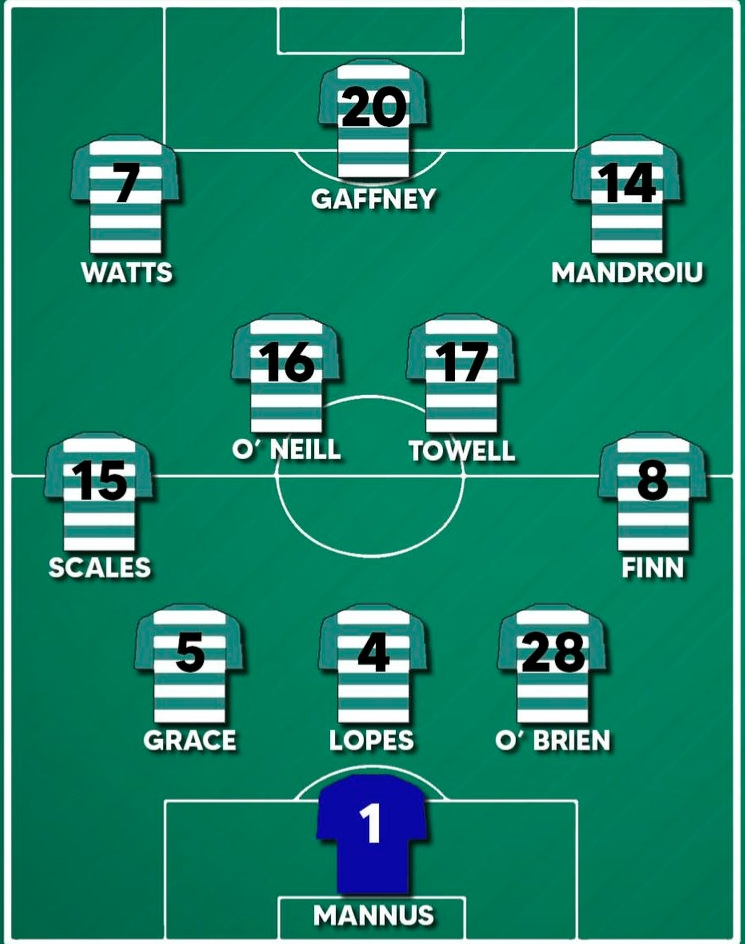

Shamrock rovers
Formation:
Players (Including subs)
Goalkeepers
- 1 Alan Mannus
- 25 Leon Pohls
- 30 Toms Leitis
Defenders
- 2 Sean Gannon
- 3 Sean Hoare
- 4 Roberto Lopes
- 5 Lee Grace
- 6 Daniel Cleary
- 11 Sean Kavanagh
- 26 Sean Cleary
- 27 Cory O' Sullivan
- 32 Kirean Cruise
- 33 Carl Lennox
Midfeilders
- 7 Dylan Watts
- 8 Ronan Finn
- 14 Simon Power
- 15 Darragh Nugent
- 16 Gary O' Niel
- 17 Richie Towell
- 18 Trevor Clarke
- 19 Markus Poom
- 21 Justin Ferizaj
- 22 Freddie Turley
- 23 Neil Farrugia
- 27 Liam Burt
- 28 Gideon Tetteh
- 29 Jack Byrne
- 38 Cian Barrett
Forwords
- 9 Aaron Greene
- 10 Graham Burke
- 20 Rory Gaffeny
- 24 Johonny Kenny
- 34 Conan noonan
Coaching staff
- Head coach Stephen Bradley
- Assistint coach Glenn Cronin
- Sporting Director Stephan McPhail
- Goalkeeping Coach Jose Ferrer
- Physio Tony McCarthey
- Kitman Mal Slattery
- Strength and Conditioning Eoin Donnelly
- Kitman John Cragen
- Video analyst Marc Penrose
Junior hoops
Info on shamrockrovers.ie
Videos:
Stadium:
Academy: